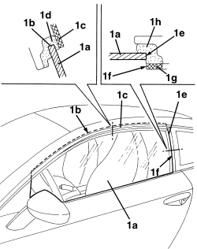
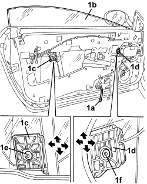
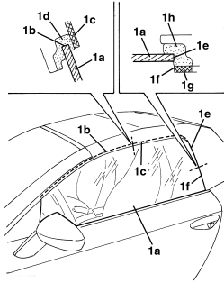
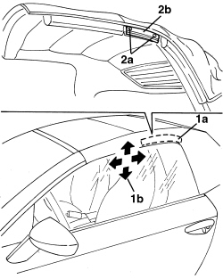
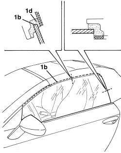
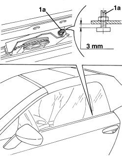

7005D11 LOWERING WINDOW (ONE), LEFT OR RIGHT FOR FRONT SIDE DOOR - CHECK SLIDING - INCLUDES POSITIONING GUIDES, POSITIONING AND FASTENING WINDOW SUPPORT TO CONTROL
- Path
- Procedures > 70 FITTINGS > 7005 PASSENGER COMPARTMENT FRONT SIDE DOORS > 7005D FRONT DOOR WINDOW GLASSES > 7005D11 LOWERING WINDOW (ONE), LEFT OR RIGHT FOR FRONT SIDE DOOR - CHECK SLIDING - INCLUDES POSITIONING GUIDES, POSITIONING AND FASTENING WINDOW SUPPORT TO CONTROL
- Kind
- repair procedure (removal / refitting; the operation number is the code)
- Applies to
- all engines; all production periods
- Interactive page
- https://sloeber94.github.io/elrnDB-aBrrSpdr/en/#/946002507
Applies to: all engines; all production periods
- Slide control
- Check the window slides correctly (without sticking) during opening and closure.
If necessary, adjust the window as described below.
- If necessary.
Op. 7005M25 FRONT SIDE DOOR ELECTRICALLY OPERATED WINDOW MECHANISM - CHECK POSITION AND FASTENING
Check alignment and closure
1. Close the door, then raise window (1a) to the end of its travel and check the following:
a. entire window upper profile (1b) must fit beneath rigid profile (1c) to compress spring seal (1d) (as shown in the figure).
b. entire window rear profile (1e) must be aligned with end (1f) of rigid profile (1g) and slightly compress spring seal (1h) (as shown in the figure)
c. open the door and check that the window lowers automatically by a few millimetres before the door begins to move (so it is released from rigid profile (1c))
If necessary, adjust as described below.
Window adjustment
2. If necessary, adjust the window as follows.
a. if the window is aligned but upper profile (1b) does not compress spring seal (1d), carry out the "upper mechanical end stop check" procedure as described below.
b. if the window closure position does not meet the requirements described under points 1a and/or 1b, carry out the "window positioning adjustment" procedure as described below.

Applies to: all engines; all production periods
Upper mechanical end stop check
- Lower the window to the lower end of travel position.
1. Check that end of travel distance (1a) is 3 mm, otherwise restore it. Repeat the check.

Applies to: all engines; all production periods
Window orientation adjustment
Op. 7005E38 FRONT SIDE DOOR INTERIOR HANDLE- R.R.
Op. 7005M14 SWITCH UNIT ON DRIVER'S FRONT DOOR - R.R.
Or, alternatively.
Op. 7005M12 PASSENGER SIDE FRONT DOOR ELECTRICALLY OPERATED WINDOW SWITCH - R.R.
Op. 7040E24 LOWER COURTESY LIGHT IN DOOR PANEL - R+R
Op. 7005E12 CORNER COVER FOR ONE FRONT SIDE DOOR, LH OR RH - R.R.
Op. 7005E11 LH OR RH FRONT DOOR INNER PANEL - R+R WITH FOULING PARTS REMOVED
Op. 7005A04 FRONT SIDE DOOR WATER GUARD PROTECTION - R.R. OR POSITION WITH DOOR PANEL REMOVED
1. Provisionally connect the window switch unit to connection (1a), then move window (1b) to bring rear window retainer (1c) and front window retainer (1d) into an accessible position (as shown in the figure), then slightly loosen bolt (1e) and (1f) and adjust the window position.
- Tighten bolts (1e) and (1f) and carry out the alignment and closure check procedure as described previously.
Component | Fastening | dia | Value (daNm) | Validity |
|---|---|---|---|---|
FRONT DOOR WINDOW | Bolt | M6x16 | 0.7 ÷ 1.1 |
- If the movements allowed by the window retainers do not allow effective window adjustment, proceed as follows:
Op. 7005M25 FRONT SIDE DOOR ELECTRICALLY OPERATED WINDOW MECHANISM - CHECK POSITION AND FASTENING

Applies to: all engines; all production periods
- Refit the parts removed.
- Check that the window is working properly.
Applies to: engines: 2.2 JTS, 3.2 JTS; all production periods; only with equipment: Spider
- Slide control
- With the hood closed, check the window slides correctly (without sticking) during opening and closure.
If necessary, adjust the window as described below.
- If necessary.
Op. 7005M25 FRONT SIDE DOOR ELECTRICALLY OPERATED WINDOW MECHANISM - CHECK POSITION AND FASTENING
Check alignment and closure
1. Close the door, then raise window (1a) to the end of its travel and check the following:
a. entire window upper profile (1b) must fit beneath profile (1c) to compress spring seal (1d) (as shown in the figure).
b. entire window rear profile (1c) must be aligned with end (1f) of profile (1g) and slightly compress spring seal (1h) (as shown in the figure).
c. open the door and check that the window lowers automatically by a few millimetres before the door begins to move (so it is released from profile (1c))

Applies to: engines: 2.2 JTS, 3.2 JTS; all production periods; only with equipment: Spider
If necessary, adjust as described below.
Hood seal adjustment
1. Section (1a) of the door housing hood seal is adjustable in the directions indicated by arrows (1b), however, if necessary, proceed to the seal adjustment in order to make it adhere to the door window, as shown below.
- Remove the centre gasket.
Op. 7030H37 SEAL (ONE), LEFT OR RIGHT, HOOD SIDE SEAL - R.R.
2. Loosen bolts (2a) and adjust the position of drip channel (2b) for seal mounting (1a); after adjustment, tighten bolts (2a).
- Refit the seal.
Op. 7030H37 SEAL (ONE), LEFT OR RIGHT, HOOD SIDE SEAL - R.R.

Applies to: engines: 2.2 JTS, 3.2 JTS; all production periods; only with equipment: Spider
Window adjustment
1. If necessary, adjust the window as follows.
a. if the window is aligned but whole upper profile (1b) does not compress spring seal (1d), carry out the upper mechanical end stop check procedure as described below.
b. if the window closure position does not meet the requirements described under points 1a and/or 1b, carry out the window orientation adjustment procedure as described below.

Applies to: engines: 2.2 JTS, 3.2 JTS; all production periods; only with equipment: Spider
Upper mechanical end stop check
- Lower the window to the lower end of travel position.
1. Check that end of travel distance (1a) is 3 mm, otherwise restore it. Repeat the check.

Applies to: engines: 2.2 JTS, 3.2 JTS; all production periods; only with equipment: Spider
Window orientation adjustment
Op. 7005E38 FRONT SIDE DOOR INTERIOR HANDLE- R.R.
Op. 7005M14 SWITCH UNIT ON DRIVER'S FRONT DOOR - R.R.
Or, alternatively.
Op. 7005M12 PASSENGER SIDE FRONT DOOR ELECTRICALLY OPERATED WINDOW SWITCH - R.R.
Op. 7040E24 LOWER COURTESY LIGHT IN DOOR PANEL - R+R
Op. 7005E12 CORNER COVER FOR ONE FRONT SIDE DOOR, LH OR RH - R.R.
Op. 7005E11 LH OR RH FRONT DOOR INNER PANEL - R+R WITH FOULING PARTS REMOVED
Op. 7005A04 FRONT SIDE DOOR WATER GUARD PROTECTION - R.R. OR POSITION WITH DOOR PANEL REMOVED
1. Provisionally connect the window switch unit to connection (1a), then move window (1b) to bring rear window retainer (1c) and front window retainer (1d) into an accessible position (as shown in the figure), then slightly loosen bolts (1e) and (1f) and adjust the window position.
- Tighten bolts (1e) and (1f) and carry out the alignment and closure check procedure as described previously.
Component | Fastening | dia | Value (daNm) | Validity |
|---|---|---|---|---|
FRONT DOOR WINDOW | Bolt | M6x16 | 0.7 ÷ 1.1 |
- If the movements allowed by the window retainers do not allow effective window adjustment, proceed as follows:
Op. 7005M25 FRONT SIDE DOOR ELECTRICALLY OPERATED WINDOW MECHANISM - CHECK POSITION AND FASTENING
Applies to: engines: 2.2 JTS, 3.2 JTS; all production periods; only with equipment: Spider
- Refit the parts removed.
- Check that the window is working properly.
Topics linked from this page (10)
- 7005 PASSENGER COMPARTMENT FRONT SIDE DOORS
- 7005A04 FRONT SIDE DOOR WATER GUARD PROTECTION - R.R. OR POSITION WITH DOOR PANEL REMOVED
- 7005E11 LH OR RH FRONT DOOR INNER PANEL - R+R WITH FOULING PARTS REMOVED
- 7005E12 CORNER COVER FOR ONE FRONT SIDE DOOR, LH OR RH - R.R.
- 7005E38 FRONT SIDE DOOR INTERIOR HANDLE- R.R.
- 7005M12 PASSENGER SIDE FRONT DOOR ELECTRICALLY OPERATED WINDOW SWITCH - R.R.
- 7005M14 SWITCH UNIT ON DRIVER'S FRONT DOOR - R.R.
- 7005M25 FRONT SIDE DOOR ELECTRICALLY OPERATED WINDOW MECHANISM - CHECK POSITION AND FASTENING
- 7030H37 SEAL (ONE), LEFT OR RIGHT, HOOD SIDE SEAL - R.R.
- 7040E24 LOWER COURTESY LIGHT IN DOOR PANEL - R+R
Topics that link to this page (6)
- S062 FRONT DOORS CREAKING
- T021 HOOD WIND NOISE
- V005 FRONT DOOR WATER PENETRATION
- V012 HOOD WATER PENETRATION
- 7005D14 FRONT SIDE DOOR DESCENDING WINDOW GLASS - R.R. WITH DOOR PANEL (AND SUPPORT FRAME) REMOVED
- 7005M25 FRONT SIDE DOOR ELECTRICALLY OPERATED WINDOW MECHANISM - CHECK POSITION AND FASTENING